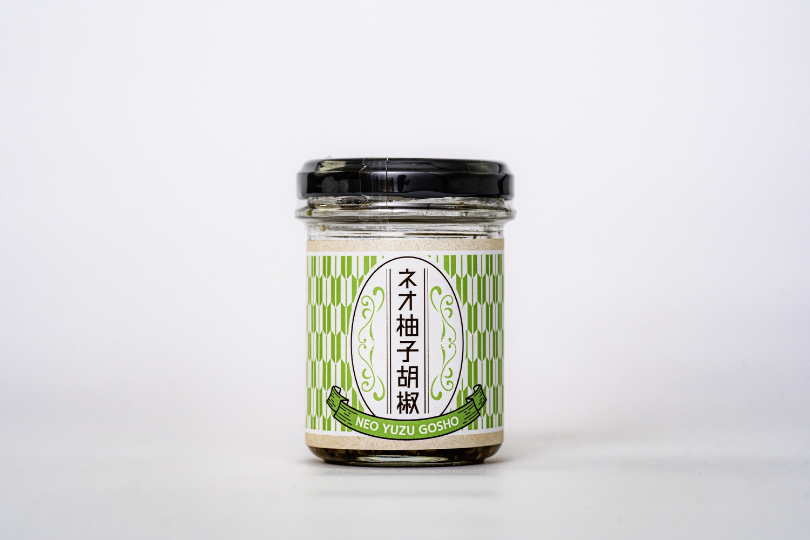
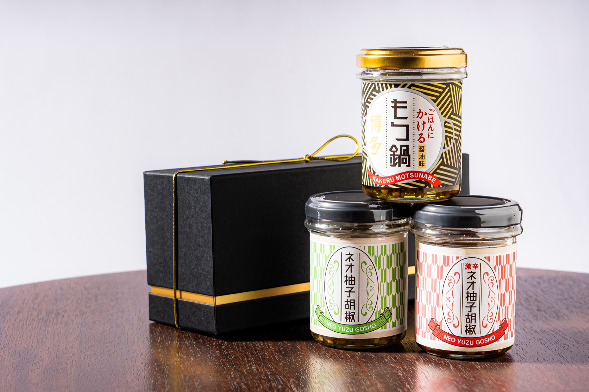
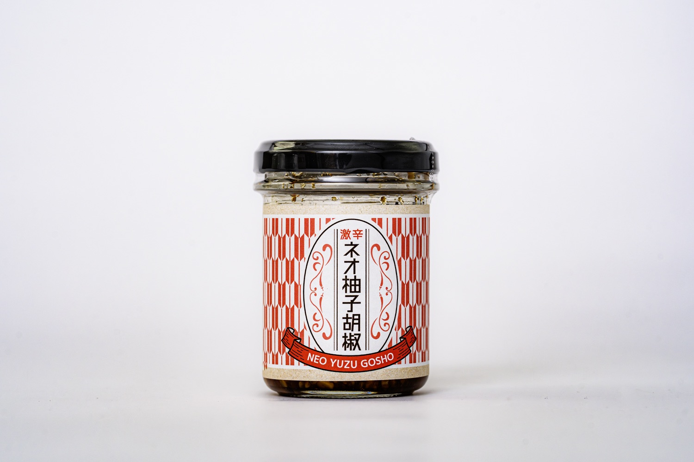
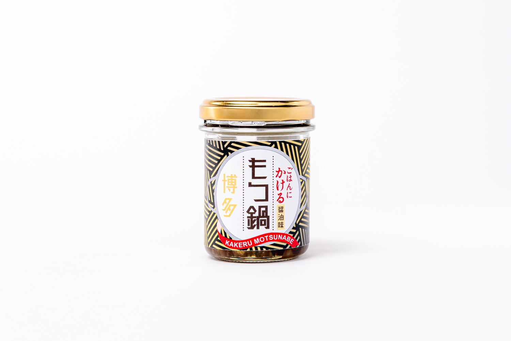
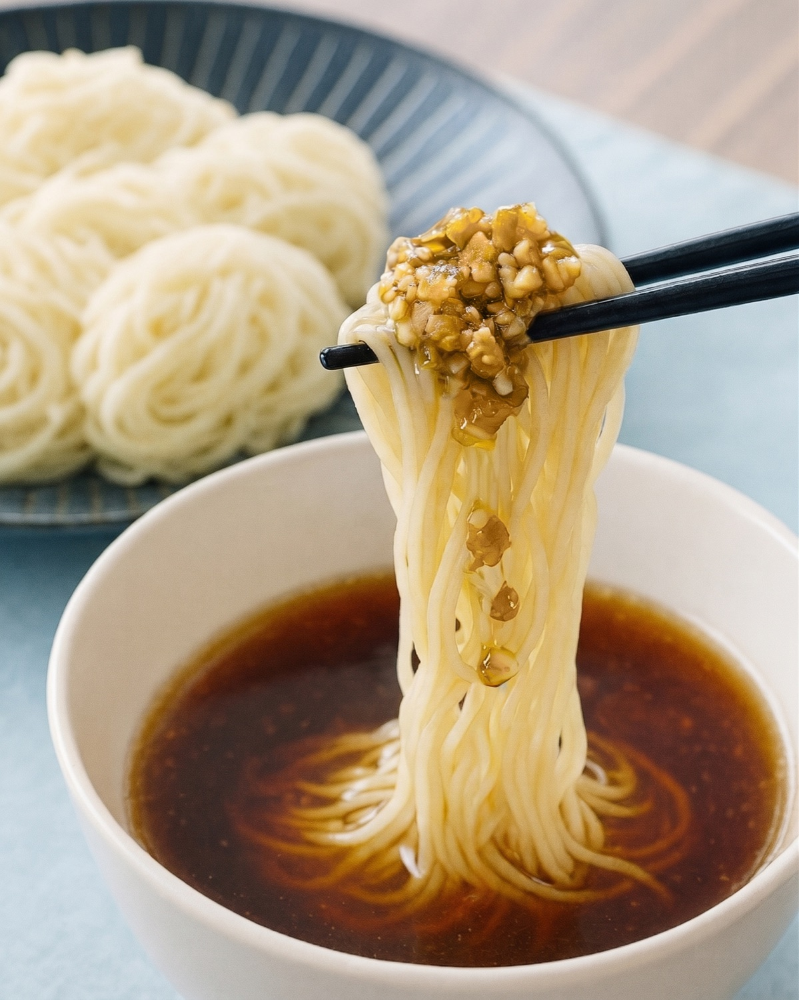
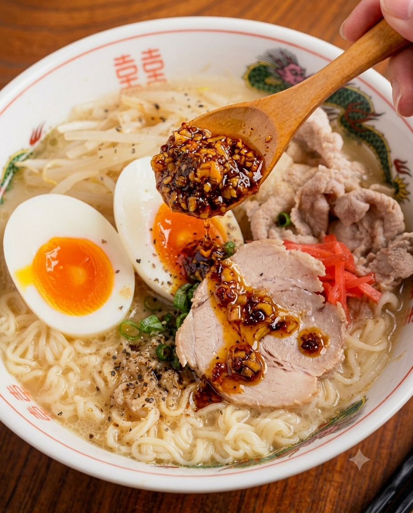
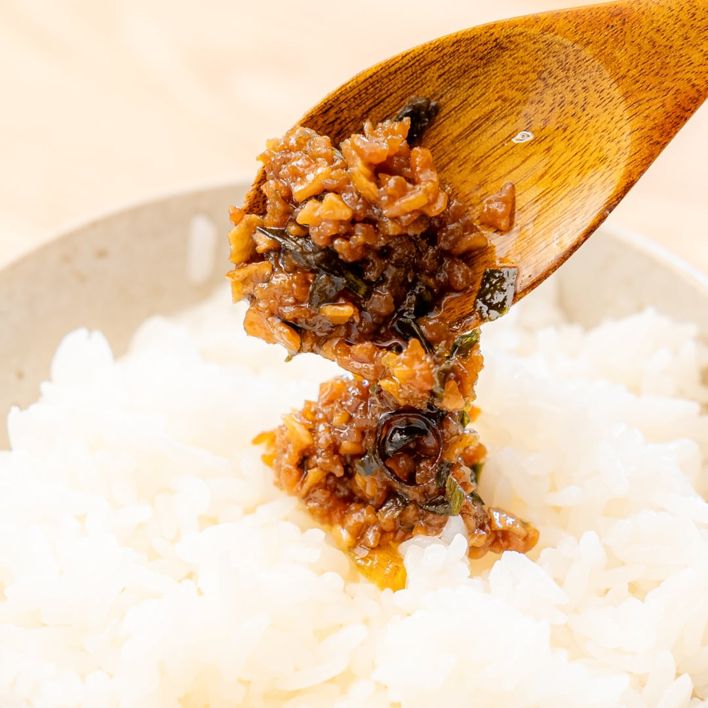
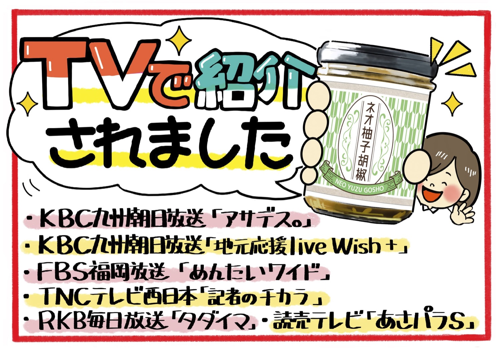
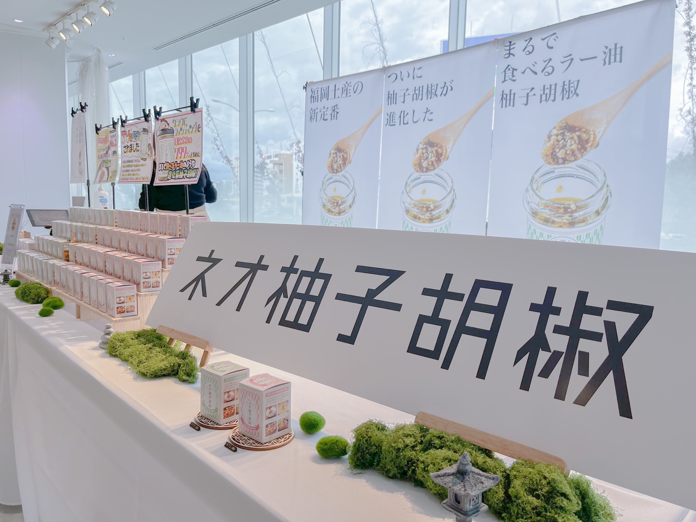

01 / ORIGINAL
ネオ柚子胡椒
柚子胡椒なのに、
これだけでうまい。
柚子胡椒に、にんにく・ごま油・ネギ油などを合わせた、ネオフクオカの定番調味料。
まず食べるなら、これ。
9.2 WED — 9.30 WED福岡空港 ポップアップ
FUKUOKA-BORN FOOD BRAND
福岡県うきは市発の食品ブランド
「ネオフクオカ」が期間限定出店。

3商品試食できます
ABOUT NEO FUKUOKA
ネオフクオカは、福岡県うきは市で生まれた食品ブランドです。柚子胡椒や博多のもつ鍋など、福岡になじみのある味をヒントに、いつもの食卓で楽しめる商品をつくっています。

3 FLAVORS
気になる味を、福岡空港で試してみてください。

01 / ORIGINAL
柚子胡椒なのに、
これだけでうまい。
柚子胡椒に、にんにく・ごま油・ネギ油などを合わせた、ネオフクオカの定番調味料。
まず食べるなら、これ。

02 / EXTRA HOT
旨さはそのまま。
辛さは、かなり本気。
ネオ柚子胡椒のおいしさをベースに、しっかりとした辛さを楽しめる激辛タイプ。
辛いもの好きなら、こちら。

03 / MOTSUNABE
もつ鍋を、
ごはんにかけました。
牛や野菜の旨みと、ニンニクのコク。博多のもつ鍋をヒントに作った、ごはんのお供です。
福岡らしさで選ぶなら、これ。
HOW TO ENJOY

01
柚子の香りと、にんにく・ごま油のコクをプラス。

02
いつものラーメンが、ひとさじで旨辛に。

03
温かいごはんにのせるだけ。
FOR YOU, FOR SOMEONE
旅行から帰ったあとも、
福岡の味を食卓で。
家族みんなで楽しめる
ごはんのお供。
「これ何？」から会話が始まる、
ちょっと珍しい福岡土産。
TASTING AVAILABLE
ネオ柚子胡椒はどんな味？
激辛はどのくらい辛い？
「ごはんにかけるもつ鍋」ってどんな味？
福岡空港のポップアップでは、
実際に味を試してから選べます。
試食できます
AWARDS & MEDIA
ネオ柚子胡椒
クラウドファンディング目標達成率
2024年5月終了
KBC「アサデス。」
FBS「めんたいワイド」などで紹介

ポップアップストア
ACCESS
福岡空港
国内線旅客ターミナルビル 2F

福岡空港の国内線旅客ターミナルビルへお越しください。
館内案内を確認し、国内線2Fへお進みください。
3商品の瓶と「ネオフクオカ」の表示が目印です。
※写真は過去のポップアップ開催時の売場イメージです。
TAKE FUKUOKA HOME
ネオ柚子胡椒、激辛ネオ柚子胡椒、ごはんにかけるもつ鍋。
ぜひ試食して、お気に入りを見つけてください。